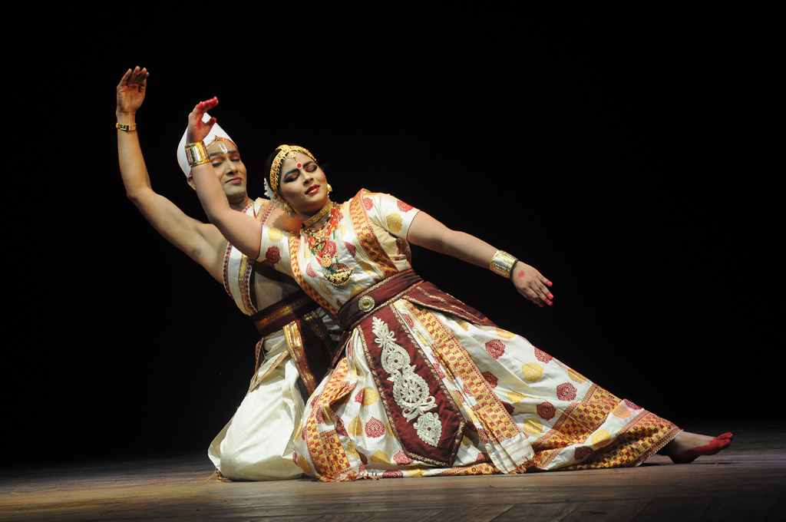

SATTRIYA

Sattriya or Sattriya Nritya, is a major Indian classical dance.This dance was initially created as part of Bhaona which are performances of Ankiya Nat, one-act plays, originally created by Sankardev, the 15th-16th century polymath from Assam.These dances are part of the living traditions today of Sattras, which are communities of live-in devotees belonging to the Ekasarana dharma, the religion established by Sankardev